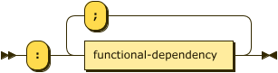

Processing Instructions
Processing Instructions are declarative statements that allow the parser and processor to enable and disable language features as well as load and save external relation data.
A conformant DATALOG-TEXT processor MUST signal the error ERR_UNSUPPORTED_PROCESSING_INSTRUCTION when detecting a processing instruction identifier which they do not recognize or cannot support, even if it may be valid in some other version of this specification.

processing-instruction
::= "."
( pi-pragma
| pi-assert | pi-infer
| pi-input | pi-output )
"." ;
Strict Processing
When strict processing is enabled (either by pragma or command-line) the following processing instructions MUST BE used:
- feature pragmas – all features required MUST BE declared before use.
assert– all extensional relations MUST BE declared before use.infer– all intensional relations MUST BE declared before use.
Processing Instruction pragma
A pragma is generally used to enable or disable some feature of either the parser or resolver. The first predicate in this production is termed the pragma identifier. The details of supported pragmas is in the separate section § Pragmas.
A conformant DATALOG-TEXT processor MUST signal an error when detecting a pragma identifier which they do not recognize, even if it may be valid in some other version of this specification.

pi-pragma
::= "pragma" predicate ( "=" constant )? ;
Errors
ERR_UNSUPPORTED_PRAGMA– the initial predicate does not identify a supported pragma.
Processing Instruction assert
The assert processing instruction declares a new relation in the extensional database.
The following constraints exist:
- the initial predicate MUST NOT be the label of an existing relation.
- all attribute labels, if declared, MUST BE distinct.
All extensional relations MUST be asserted before use in strict processing mode, an error MUST BE signaled otherwise. In non-strict mode a conforming DATALOG-TEXT processor MAY signal an error, or MAY continue processing as if the feature is enabled and infer the declaration and attribute types when the first fact is parsed. The use of this processing instruction is therefore optional, but recommended.

pi-assert
::= "assert" relation-decl functional-dependency-list? ;
A relation declaration declares the types, and optionally the names, of the
attributes of a relation. The first predicate in relation-decl is the label
of the relation, the attributes themselves are defined within the following
parenthesis:

relation-decl
::= predicate attribute-decl-list ;
Each attribute has a declared type, and may also be preceded by a predicate label.

attribute-decl-list
::= "(" attribute-decl ( "," attribute-decl )* ")" ;

attribute-decl
::= ( predicate ":" )?
( "boolean" | "float" | "decimal" | "integer" | "string" ) ;
Note that the types float and decimal are only available if the feature extended_numerics is enabled.
Errors
ERR_INVALID_RELATION– the values for productionattribute-decl-listwhere invalid, it was not possible to construct a compliant relation schema.ERR_RELATION_ALREADY_EXISTS– the predicate labeling the relation already exists (either as an extensional or intensional relation).
Example
The following declares a relation labeled human that has a single string attribute:
.assert human(string).
The following declares a relation labeled human that has a single string attribute, labeled as name:
.assert human(name: string).
The following is an error in that the name label is used for two separate attributes:
.assert human(name: string, name: string).
%% ==> ERR_INVALID_RELATION
The following is an error, relations cannot be defined twice:
.assert human(name: string).
.assert human(first_name: string, last_name: string).
%% ==> ERR_RELATION_ALREADY_EXISTS
Functional Dependencies
The functional-dependency-list production introduces a relationship between one or more attributes on the left-hand side (determinant – a set denoted by $\small\alpha$) and one or more attributes on the right-hand side (dependent – a set denoted by $\small\beta$). This relationship denotes that for a relationship $\small R$, every valid combination of determinant values uniquely determines the value of the dependent values. The syntax for the dependency is intended to be as close to the mathematical form $\small R: \alpha \longrightarrow \beta$.
The following constraints exist:
- the set of attribute identifiers comprising the set $\small\alpha$ MUST BE in $\small R$.
- the set of attribute identifiers comprising the set $\small\beta$ MUST BE in $\small R$.
- the same attribute identifier MUST NOT appear in both determinant and dependent.
In strict processing mode this production is only valid if the corresponding language feature is enabled, an error MUST BE signaled otherwise. non-strict mode a conforming DATALOG-TEXT processor MAY signal an error, or MAY continue processing as if the feature is enabled.
Duplicate functional dependencies MUST NOT be treated as an error, they can be ignored; however, a DATALOG-TEXT processor MAY issue a warning on detection of duplicate values.

functional-dependency-list
::= ":" functional-dependency ( ";" functional-dependency )* ;

functional-dependency
::= attribute-index-list ( "-->" | "⟶" ) attribute-index-list ;

attribute-index-list
::= attribute-index ( "," attribute-index )*
An attribute index is either an attribute label, if one has been declared for the relation, or an integer $\small i \in [1,|schema(R)|]$.

attribute-index
::= integer | predicate
Errors
ERR_INVALID_ATTRIBUTE_INDEX– the index (integer) is not valid within the relation’s schema.ERR_INVALID_ATTRIBUTE_LABEL– the label (predicate) is not valid within the relation’s schema.
Examples
Given the extensional relation employee the two functional dependencies in the following are equivalent. Note that the implementation will ignore such duplicate declarations.
.feature(functional_dependencies).
.assert employee(id:integer, name:string) : id --> name.
.assert employee(id:integer, name:string) : 1 ⟶ 2.
The following errors result from invalid attributes specified in the dependency.
.feature(functional_dependencies).
.assert employee(id:integer, name:string) : 1 ⟶ 42.
%% ==> ERR_INVALID_ATTRIBUTE_INDEX
.assert employee(id:integer, name:string) : id --> first_name.
%% ==> ERR_INVALID_ATTRIBUTE_LABEL
Processing Instruction infer
In the same manner as assert above, the infer processing instruction declares a new relation in the intensional database. The alternate form is even more explicit in that it declares an intensional relation in terms of a previously declared extensional relation.
The following constraints exist:
- the initial predicate MUST NOT be the label of an existing extensional relation.
- all attribute labels, if declared, MUST BE distinct.
All intensional relations MUST be asserted before use in strict processing mode, an error MUST BE signaled otherwise. In non-strict mode a conforming DATALOG-TEXT processor MAY signal an error, or MAY continue processing as if the feature is enabled and infer the declaration and attribute types from rules as they are parsed. The use of this processing instruction is therefore optional, but recommended.

pi-infer
::= "infer" ( relation-decl | "from" predicate ) ;
Errors
ERR_INVALID_RELATION– the values for productionattribute-decl-listwhere invalid, it was not possible to construct a compliant relation schema.ERR_RELATION_ALREADY_EXISTS– the predicate labeling the relation already exists (either as an extensional or intensional relation).ERR_PREDICATE_NOT_AN_EXTENSIONAL_RELATION– the predicate following thefromkeyword is not the label of an extensional relation.
Example
The following declares a relation labeled mortal that has a single string attribute, labeled as name.
.infer mortal(name: string).
Alternatively the short-cut form is often more convenient but has the advantage that if the definition of human changes declaration changes accordingly.
.assert human(name: string).
.infer mortal from human.
The following error is raised as humans is incorrectly spelled.
.assert human(name: string).
.infer mortal from humans.
%% ==> ERR_PREDICATE_NOT_AN_EXTENSIONAL_RELATION
Processing Instruction input
The input processing instruction instructs the parser to load facts for the named extensional relation from an external file.
This specification does not determine whether loading external resources happens during parsing, at the completion of parsing, at evaluation time, or via a client initiated API call. However, as some errors (fact schema conformance for example) cannot happen until facts are loaded, this choice MAY defer the signaling of some critical errors.

pi-input
::= "input" io-details ;
The io-details production informs the parser of the expected media type for the external resource and any parameters for that media type.
The initial predicate in MUST BE the label of an extensional relation.
For a detailed discussion of media type handling, see § Dataset Media Types.

io-details
::= predicate parameter-list ;
The parameter list provides the values that are specified for a particular media type. For example, the media type text/csv supports two optional parameters, charset and header; the value of the header parameter MUST BE one of present or absent RFC4180, section 3.

parameter-list
::= parameter-assignment ( "," parameter-assignment )* ;

parameter-assignment
::= predicate "=" constant ;
Errors
ERR_PREDICATE_NOT_AN_EXTENSIONAL_RELATION– the predicate is not the label of an extensional relation, theinputprocessing instruction is only valid for extensional relations.ERR_INVALID_URI– theuriparameter could not be parsed, or has an unsupported scheme.ERR_UNSUPPORTED_MEDIA_TYPE– thetypeparameter could not be parsed, or has an unsupported media type.ERR_IO_INSTRUCTION_PARAMETER– another parameter provided for the type was either missing or has an incorrect value.ERR_INPUT_RESOURCE_DOES_NOT_EXIST– the URI could not be resolved to an accessible resource.ERR_IO_SYSTEM_FAILURE– some other I/O failure occurred.
Examples
In the following example the full media type is used and a parameter, allowing the resolver to pass the following request header to an HTTP request
Accept: text/csv;header=absent
.assert human(name: string).
.input(human, uri="data/humans.csv", type="text/csv", header=absent).
In the following the short form of the media type is used, allowing the resolver to pass the following request header to an HTTP request
Accept: text/csv
.assert human(name: string).
.input(human, uri="data/humans.csv", type="csv").
In the following no media type is present, in this case the resolver MUST follow the steps in § Resolvers.
.assert human(name: string).
.input(human, uri="data/humans.csv").
The following error is signaled due to the media type audio/mp4 which is not, and is unlikely to ever be, supported.
.assert human(name: string).
.input(human, uri="data/humans.csv", type="audio/mp4").
%% ==> ERR_UNSUPPORTED_MEDIA_TYPE
The values for the header parameter are absent or present.
.assert human(name: string).
.input(human, uri="data/humans.csv", headers=yes_please).
%% ==> ERR_IO_INSTRUCTION_PARAMETER
Processing Instruction output
The output processing instruction instructs the parser to write facts from the named intensional relation to an external file.
This specification does not determine whether writing to external resources happens during evaluation, at completion of evaluation, or via a client initiated API call. However, as some errors (un-writable output resource) cannot happen until intensional relations are stored, this choice MAY defer the signaling of some critical errors.
pi-output ::= "output" io-details "." ;
Errors
ERR_PREDICATE_NOT_AN_INTENSIONAL_RELATION– the predicate is not the label of an intensional relation, theoutputprocessing instruction is only valid for intensional relations.ERR_INVALID_URI– theuriparameter could not be parsed, or has an unsupported scheme.ERR_UNSUPPORTED_MEDIA_TYPE– thetypeparameter could not be parsed, or has an unsupported media type.ERR_IO_INSTRUCTION_PARAMETER– another parameter provided for the type was either missing or has an incorrect value.ERR_OUTPUT_RESOURCE_NOT_WRITEABLE– the URI identified a resource that could not be written to.ERR_IO_SYSTEM_FAILURE– some other I/O failure occurred.
Examples
.infer mortal(name: string).
.output(mortal, uri="data/mortals.txt").
.infer mortal(name: string).
.output(mortal, uri="data/mortals.txt", type="csv", separator=";", header=present).